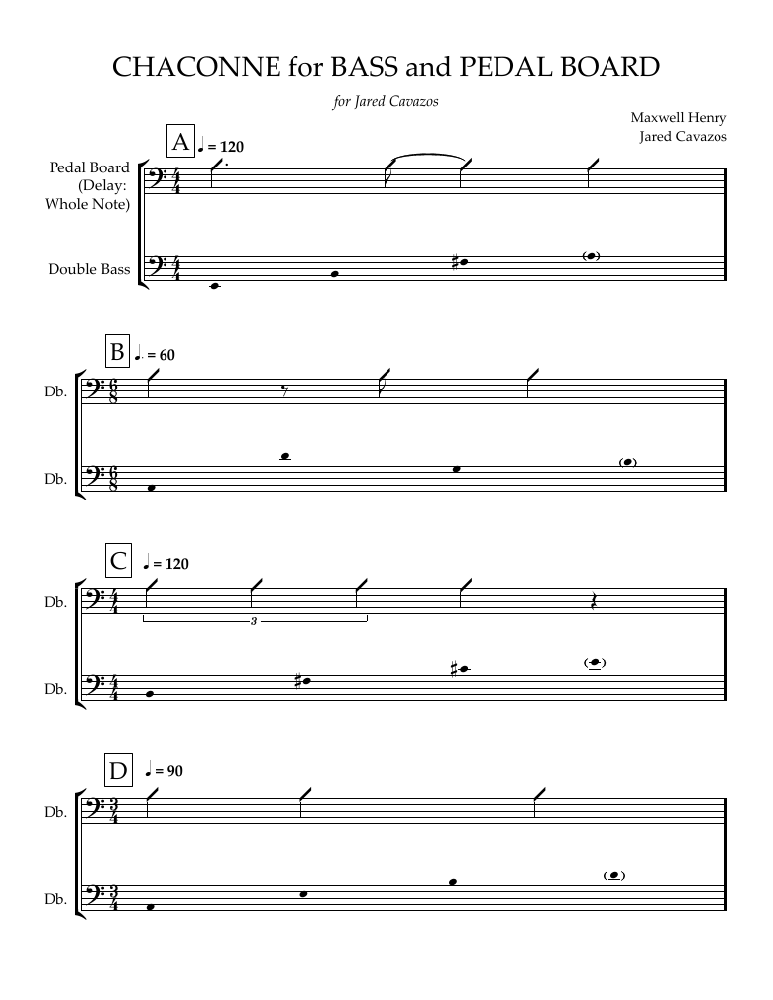

A walkthrough of the canvas, node by node, following a piece that began as a bass fugue and became Chaconne for Bass and Pedal Board. The chain above every slide is the real graph, drawn from the ports the app actually accepts.
The delay is a ground, not a set of fugal entries. Rule 1 is retired: the form becomes a chaconne, a repeating bass the pedal generates live with variations flowing over it. Rules 2, 3 and 4 survive unchanged, because a sparse subject locked to the delay cycle is what a ground needs.

DraftChaconne for Bass and Pedal Board
Full draft · one page · unengraved
Chaconne for Bass and Pedal Board
2026 · for bass and delay pedal · with Jared Cavazos · 12′39″